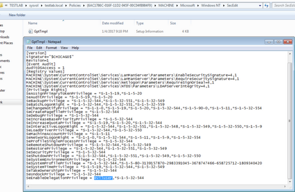

Why Care
There are a million ways to backdoor Active Directory given sufficient rights (make that a million and one : ). Sean Metcalf calls these “Sneaky Active Directory Persistence Tricks“. Some of these involve ACL backdoors, something I’ve covered some in the past. Other approaches might require maliciously editing GPOs. Still others could involve editing user objects. The SeEnableDelegationPrivilege approach is a bit of everything above.
TL;DR: if we control an object that has SeEnableDelegationPrivilege in the domain, AND said object has GenericAll/GenericWrite rights over any other user object in the domain, we can compromise the domain at will, indefinitely.
Given elevated domain rights OR edit rights to the default domain controller GPO (something @_wald0, @cptjesus, and I are currently working on for BloodHound) for just a few minutes, you can make a single modification to the given GPO to implement this backdoor. This GPO is located at \\DOMAIN\sysvol\testlab.local\Policies\{6AC1786C-016F-11D2-945F-00C04fB984F9}\MACHINE\Microsoft\Windows NT\SecEdit\GptTmpl.inf. By adding any user SID or username to the SeEnableDelegationPrivilege line of the [Privilege Rights] section, the setting will take hold whenever the user/machine’s current DC reboots or refreshes its group policy:

If eviluser has full rights over ANY user in the domain, we can modify that user’s msDS-AllowedToDelegateTo value to be whatever target service we want to compromise. We can also modify the TRUSTED_TO_AUTHENTICATE_FOR_DELEGATION UAC flag if needed. In this case, let’s use ldap/DOMAIN_CONTROLLER to facilitate DCSyncing at will:


If eviluser has GenericAll over any target victim, then we don’t even have to know the victim user’s password. We can execute a force password reset using Set-DomainUserPassword to a known value and then execute the asktgt.exe/s4u.exe attack flow.
Obviously, from the defensive side, take note of what users have the SeEnableDelegationPrivilege privilege on your domain controllers, through PowerView or other means. This right effectively gives those users complete control of the domain, making a great ‘subtle’, but easy to detect (if you know what you’re looking for) AD backdoor.